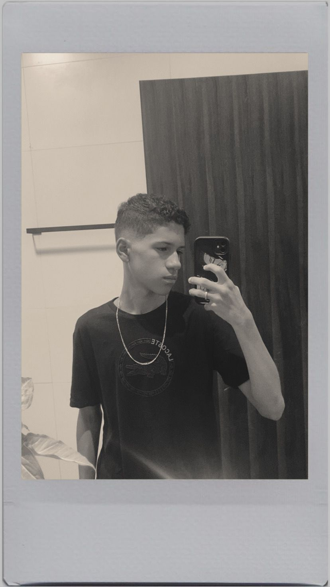

gosto de esportes adoro games, estudar, viajar gosto muito de ir a praia mesmo não indo muito
o curso desenvolvimento de sistemas, ensina a mexer com programação, java e a conhecer os aparelhos que usamos por exemplo o computador em si, tudo que envolve dentro da cascaça, ou pweb que envolve o html e o css, o java que já é outra referencia.